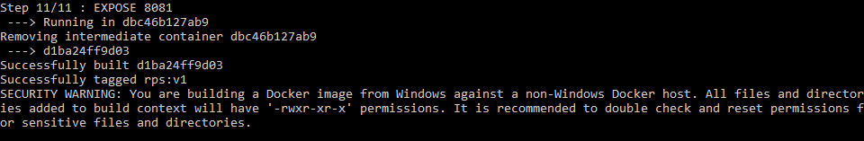
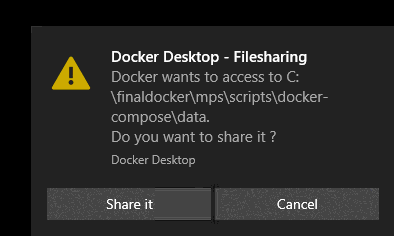
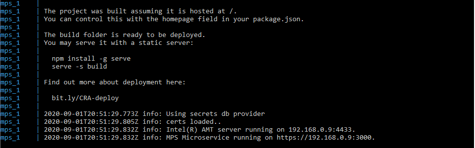

Build and Deploy Docker* Images for MPS and RPS Locally¶
Management Presence Server (MPS) and Remote Provisioning Server (RPS) provide support for deploying the services as Docker* images, standardized packages containing an application's source code, libraries, environment, and dependencies.
A Docker container is the instantiation of a Docker image as a virtualized unit that separates the application from the environment. Docker* containers start and run reliably, securely, and portably inside different environments, eliminating some of the usual problems that occur with software deployment on varying platforms.
Get more information about Docker images and containers at Docker resources.
What You'll Do¶
This section describes how to deploy MPS and RPS as Docker* images on the development system:
- Clone the repositories.
- Build the images.
- Set the environment variables.
- Run the tool docker-compose tool on a sample configuration file to define and enable a multi-container environment.
For information about MPS and RPS, see Install MPS and Install RPS.
Clone the MPS and RPS Repositories¶
Clone the MPS and RPS repositories if they are not already on the development system.
Clone MPS¶
Clone the MPS repository.
git clone https://github.com/open-amt-cloud-toolkit/mps.git mps
Clone RPS¶
Clone the RPS repository.
git clone https://github.com/open-amt-cloud-toolkit/rps.git rps
After the git clone commands complete, the parent directory will contain an MPS and RPS folder.
📦parent
┣ 📂mps
┗ 📂rps
Build the Docker Images¶
Build the MPS and RPS Docker images from their respective directories with the build -t command, giving the image a name and tag:
- Create a name and tag with lowercase letters, digits, and separators (i.e., underscores, periods, and dashes).
- Do not end a name or tag with a separator.
- Tags contain up to 128 characters.
Note: Building a fresh Docker image may take several minutes.
Build MPS¶
1. Navigate to MPS folder and build the Docker image.
cd mps
docker build . -t mps:v1

Note: On completion, a security warning is normal during local setup with the default values for developer testing environments.
Build RPS¶
2. Navigate to the RPS folder and build the Docker image.
cd ..
cd rps
docker build . -t rps:v1

Set the Environment Variables¶
3. After building the new MPS and RPS images, navigate to mps\scripts\docker-compose folder and copy the .env.template file to .env.
cd ..
cd mps/scripts/docker-compose
Windows Command:
copy .env.template .env
Linux Command:
cp .env.template .env
Note: Preserve the .env.template file.
This file is very important to maintain. Always copy to a new file.
4. Open the .env file in a text editor. Set the image-related environment variables within the .env file.
Change the following fields:
| Field | Change to |
|---|---|
| RPS_IMAGE | rps:v1 |
| MPS_IMAGE | mps:v1 |
| MPS_COMMON_NAME | Your development device's IP address |
Note: Forgot the name and tag from the build?
The docker images command lists repository names, tags, image IDs, and sizes.
docker images

Run docker-compose¶
The environment file .env now contains the MPS and RPS environment variables to pass to the Docker engine.
1. Navigate to the the mps/scripts/docker-compose directory.
2. Run the docker-compose up command, which starts the containers. This will take approximately 2-3 minutes to start the containers.
docker-compose up
3. Important: While the docker-compose up command is running, you may see a pop-up ask for permission for Docker Desktop Filesharing. You must select Share It for the docker-compose up command to execute successfully. If the pop-up expires and docker-compose up fails. You must run docker-compose down and then rerun docker-compose up to successfully start the containers.

Successful Output:

Check Logs¶
Alternatively, you can run docker-compose up -d to start the containers in the background. To view the logs in a separate window, follow the steps below.
Check the logs to ensure the MPS and RPS services are properly handling the traffic from end devices.
-
Open a new command line windows see the log files for mps and rps to enable the services already started to continue running.
-
Navigate to the docker-compose folder
-
Use the docker-compose logs command.
docker-compose logs [name of service]
docker-compose logs mps

A log file may provide information for troubleshooting these problems:
Next up: Configure RPS